Jan Feb Mar Apr May Jun
1959 315.42 316.31 316.50 317.56 318.13 318.00
1960 316.27 316.81 317.42 318.87 319.87 319.43
1961 316.73 317.54 318.38 319.31 320.42 319.61
1962 317.78 318.40 319.53 320.42 320.85 320.45
1963 318.58 318.92 319.70 321.22 322.08 321.31
1964 319.41 320.07 320.74 321.40 322.06 321.73
1965 319.27 320.28 320.73 321.97 322.00 321.71
1966 320.46 321.43 322.23 323.54 323.91 323.59
1967 322.17 322.34 322.88 324.25 324.83 323.93
1968 322.40 322.99 323.73 324.86 325.40 325.20
1969 323.83 324.26 325.47 326.50 327.21 326.54
1970 324.89 325.82 326.77 327.97 327.91 327.50
1971 326.01 326.51 327.01 327.62 328.76 328.40
1972 326.60 327.47 327.58 329.56 329.90 328.92
1973 328.37 329.40 330.14 331.33 332.31 331.90
1974 329.18 330.55 331.32 332.48 332.92 332.08
1975 330.23 331.25 331.87 333.14 333.80 333.43
1976 331.58 332.39 333.33 334.41 334.71 334.17
1977 332.75 333.24 334.53 335.90 336.57 336.10
1978 334.80 335.22 336.47 337.59 337.84 337.72
1979 336.05 336.59 337.79 338.71 339.30 339.12
1980 337.84 338.19 339.91 340.60 341.29 341.00
1981 339.06 340.30 341.21 342.33 342.74 342.08
1982 340.57 341.44 342.53 343.39 343.96 343.18
1983 341.20 342.35 342.93 344.77 345.58 345.14
1984 343.52 344.33 345.11 346.88 347.25 346.62
1985 344.79 345.82 347.25 348.17 348.74 348.07
1986 346.11 346.78 347.68 349.37 350.03 349.37
1987 347.84 348.29 349.23 350.80 351.66 351.07
1988 350.25 351.54 352.05 353.41 354.04 353.62
1989 352.60 352.92 353.53 355.26 355.52 354.97
1990 353.50 354.55 355.23 356.04 357.00 356.07
1991 354.59 355.63 357.03 358.48 359.22 358.12
1992 355.88 356.63 357.72 359.07 359.58 359.17
1993 356.63 357.10 358.32 359.41 360.23 359.55
1994 358.34 358.89 359.95 361.25 361.67 360.94
1995 359.98 361.03 361.66 363.48 363.82 363.30
1996 362.09 363.29 364.06 364.76 365.45 365.01
1997 363.23 364.06 364.61 366.40 366.84 365.68
Jul Aug Sep Oct Nov Dec
1959 316.39 314.65 313.68 313.18 314.66 315.43
1960 318.01 315.74 314.00 313.68 314.84 316.03
1961 318.42 316.63 314.83 315.16 315.94 316.85
1962 319.45 317.25 316.11 315.27 316.53 317.53
1963 319.58 317.61 316.05 315.83 316.91 318.20
1964 320.27 318.54 316.54 316.71 317.53 318.55
1965 321.05 318.71 317.66 317.14 318.70 319.25
1966 322.24 320.20 318.48 317.94 319.63 320.87
1967 322.38 320.76 319.10 319.24 320.56 321.80
1968 323.98 321.95 320.18 320.09 321.16 322.74
1969 325.72 323.50 322.22 321.62 322.69 323.95
1970 326.18 324.53 322.93 322.90 323.85 324.96
1971 327.20 325.27 323.20 323.40 324.63 325.85
1972 327.88 326.16 324.68 325.04 326.34 327.39
1973 330.70 329.15 327.35 327.02 327.99 328.48
1974 331.01 329.23 327.27 327.21 328.29 329.41
1975 331.73 329.90 328.40 328.17 329.32 330.59
1976 332.89 330.77 329.14 328.78 330.14 331.52
1977 334.76 332.59 331.42 330.98 332.24 333.68
1978 336.37 334.51 332.60 332.38 333.75 334.78
1979 337.56 335.92 333.75 333.70 335.12 336.56
1980 339.39 337.43 335.72 335.84 336.93 338.04
1981 340.32 338.26 336.52 336.68 338.19 339.44
1982 341.88 339.65 337.81 337.69 339.09 340.32
1983 343.81 342.21 339.69 339.82 340.98 342.82
1984 345.22 343.11 340.90 341.18 342.80 344.04
1985 346.38 344.51 342.92 342.62 344.06 345.38
1986 347.76 345.73 344.68 343.99 345.48 346.72
1987 349.33 347.92 346.27 346.18 347.64 348.78
1988 352.22 350.27 348.55 348.72 349.91 351.18
1989 353.75 351.52 349.64 349.83 351.14 352.37
1990 354.67 352.76 350.82 351.04 352.69 354.07
1991 356.06 353.92 352.05 352.11 353.64 354.89
1992 356.94 354.92 352.94 353.23 354.09 355.33
1993 357.53 355.48 353.67 353.95 355.30 356.78
1994 359.55 357.49 355.84 356.00 357.59 359.05
1995 361.94 359.50 358.11 357.80 359.61 360.74
1996 363.70 361.54 359.51 359.65 360.80 362.38
1997 364.52 362.57 360.24 360.83 362.49 364.34tidyverts & prophet
Lecture 13
Dr. Colin Rundel
Tidy time series
ts objects
In base R, time series are usually encoded using the ts S3 class,
tidyverts
This is an effort headed by Rob Hyndman (of forecast fame) and others to provide a consistent tidy data based framework for working with time series data and models.
Core packages:
tsibble- temporal data frames and related toolsfable- tidy forecasting (modelling)feasts- feature extraction and statisticstsibbledata- sample tsibble data sets
tsibble
A tsibble is a tibble with additional infrastructure for encoding temporal data - specifcially a tsibble is a tidy data frame with an index and key where
the index is the variable that descibes the inherent ordering of the data (from past to present)
and the key is one or more variables that define the unit of observation over time
each observation should be uniquely identified by the index and key
global_economy
# A tsibble: 15,150 x 9 [1Y]
# Key: Country [263]
Country Code Year GDP Growth CPI Imports
<fct> <fct> <dbl> <dbl> <dbl> <dbl> <dbl>
1 Afghan… AFG 1960 5.38e8 NA NA 7.02
2 Afghan… AFG 1961 5.49e8 NA NA 8.10
3 Afghan… AFG 1962 5.47e8 NA NA 9.35
4 Afghan… AFG 1963 7.51e8 NA NA 16.9
5 Afghan… AFG 1964 8.00e8 NA NA 18.1
6 Afghan… AFG 1965 1.01e9 NA NA 21.4
7 Afghan… AFG 1966 1.40e9 NA NA 18.6
8 Afghan… AFG 1967 1.67e9 NA NA 14.2
9 Afghan… AFG 1968 1.37e9 NA NA 15.2
10 Afghan… AFG 1969 1.41e9 NA NA 15.0
# … with 15,140 more rows, and 2 more variables:
# Exports <dbl>, Population <dbl>vic_elec
# A tsibble: 52,608 x 5 [30m]
# <Australia/Melbourne>
Time Demand Tempera…¹ Date
<dttm> <dbl> <dbl> <date>
1 2012-01-01 00:00:00 4383. 21.4 2012-01-01
2 2012-01-01 00:30:00 4263. 21.0 2012-01-01
3 2012-01-01 01:00:00 4049. 20.7 2012-01-01
4 2012-01-01 01:30:00 3878. 20.6 2012-01-01
5 2012-01-01 02:00:00 4036. 20.4 2012-01-01
6 2012-01-01 02:30:00 3866. 20.2 2012-01-01
7 2012-01-01 03:00:00 3694. 20.1 2012-01-01
8 2012-01-01 03:30:00 3562. 19.6 2012-01-01
9 2012-01-01 04:00:00 3433. 19.1 2012-01-01
10 2012-01-01 04:30:00 3359. 19.0 2012-01-01
# … with 52,598 more rows, 1 more variable:
# Holiday <lgl>, and abbreviated variable name
# ¹Temperatureaus_retail
# A tsibble: 64,532 x 5 [1M]
# Key: State, Industry [152]
State Indus…¹ Serie…² Month Turno…³
<chr> <chr> <chr> <mth> <dbl>
1 Australian Ca… Cafes,… A33498… 1982 Apr 4.4
2 Australian Ca… Cafes,… A33498… 1982 May 3.4
3 Australian Ca… Cafes,… A33498… 1982 Jun 3.6
4 Australian Ca… Cafes,… A33498… 1982 Jul 4
5 Australian Ca… Cafes,… A33498… 1982 Aug 3.6
6 Australian Ca… Cafes,… A33498… 1982 Sep 4.2
7 Australian Ca… Cafes,… A33498… 1982 Oct 4.8
8 Australian Ca… Cafes,… A33498… 1982 Nov 5.4
9 Australian Ca… Cafes,… A33498… 1982 Dec 6.9
10 Australian Ca… Cafes,… A33498… 1983 Jan 3.8
# … with 64,522 more rows, and abbreviated
# variable names ¹Industry, ²`Series ID`,
# ³Turnoveras_tsibble()
Existing ts objects can be converted to a tsibble easily,
plotting tsibbles
As the tsibble is basically just a tibble which is basically just a data frame both base and ggplot plotting methods will work.
autoplot
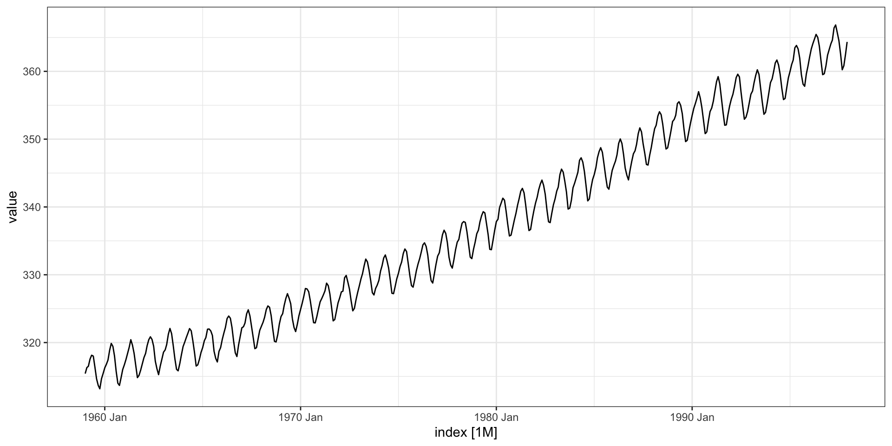Multiple variables
ggtsdisplay() replacement
The equivalent to the ggtsdisplay() plot is provided by feasts with gg_tsdisplay(),
ggtsdisplay() - pACF
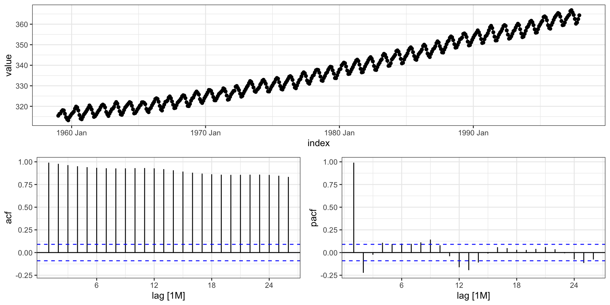Modeling with fable
elec_sales
Differencing

Modeling
To fit a model with fable we use the model() function along with a specific function for the model we are trying to fit (ARIMA() here).
As with the rest of tidyverts - fable using a tidy approach for modeling which means that the model results are stored in a tibble (called a mable).
Model summary
Model details (broom + yardstick)
# A tibble: 1 × 8
.model sigma2 log_lik AIC AICc BIC ar_roots ma_roots
<chr> <dbl> <dbl> <dbl> <dbl> <dbl> <list> <list>
1 ARIMA(value ~ pdq(3, 1, 0)) 9.85 -486. 979. 980. 992. <cpl [3]> <cpl [0]>. . .
. . .
# A tsibble: 191 x 6 [1M]
# Key: .model [1]
.model index value .fitted .resid .innov
<chr> <mth> <dbl> <dbl> <dbl> <dbl>
1 ARIMA(value ~ pdq(3, 1, 0)) 1996 Jan 85.0 84.9 0.0850 0.0850
2 ARIMA(value ~ pdq(3, 1, 0)) 1996 Feb 81.9 84.6 -2.68 -2.68
3 ARIMA(value ~ pdq(3, 1, 0)) 1996 Mar 78.4 82.7 -4.28 -4.28
4 ARIMA(value ~ pdq(3, 1, 0)) 1996 Apr 79.0 80.3 -1.25 -1.25
5 ARIMA(value ~ pdq(3, 1, 0)) 1996 May 79.7 78.0 1.76 1.76
6 ARIMA(value ~ pdq(3, 1, 0)) 1996 Jun 76.1 78.4 -2.24 -2.24
7 ARIMA(value ~ pdq(3, 1, 0)) 1996 Jul 81.4 77.5 3.87 3.87
8 ARIMA(value ~ pdq(3, 1, 0)) 1996 Aug 79.3 79.9 -0.599 -0.599
9 ARIMA(value ~ pdq(3, 1, 0)) 1996 Sep 78.1 78.7 -0.588 -0.588
10 ARIMA(value ~ pdq(3, 1, 0)) 1996 Oct 80.3 80.3 -0.0448 -0.0448
# … with 181 more rowsObserved vs predicted
Residuals
Forecasting
# A fable: 24 x 4 [1M]
# Key: .model [1]
.model index value .mean
<chr> <mth> <dist> <dbl>
1 ARIMA(value ~ pdq(3, 1, 0)) 2011 Dec N(86, 9.9) 86.2
2 ARIMA(value ~ pdq(3, 1, 0)) 2012 Jan N(88, 14) 87.6
3 ARIMA(value ~ pdq(3, 1, 0)) 2012 Feb N(87, 19) 87.0
4 ARIMA(value ~ pdq(3, 1, 0)) 2012 Mar N(87, 30) 86.5
5 ARIMA(value ~ pdq(3, 1, 0)) 2012 Apr N(87, 36) 87.2
6 ARIMA(value ~ pdq(3, 1, 0)) 2012 May N(87, 44) 86.8
7 ARIMA(value ~ pdq(3, 1, 0)) 2012 Jun N(87, 54) 86.7
8 ARIMA(value ~ pdq(3, 1, 0)) 2012 Jul N(87, 62) 87.0
9 ARIMA(value ~ pdq(3, 1, 0)) 2012 Aug N(87, 70) 86.8
10 ARIMA(value ~ pdq(3, 1, 0)) 2012 Sep N(87, 79) 86.8
# … with 14 more rowsForecasting - autoplot
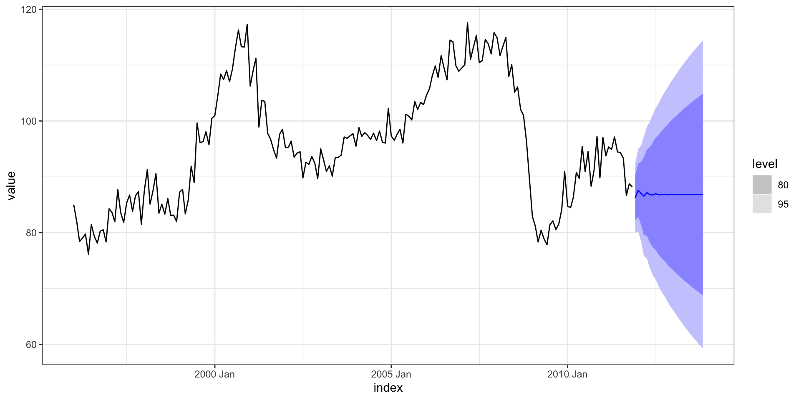Comparing models
The fable model() function also has the ability to fit multiple models at the same time which then makes comparison more straight forward.
( mm = elec_sales %>%
model(
arima310 = ARIMA(value ~ pdq(3,1,0)),
arima013 = ARIMA(value ~ pdq(0,1,3)),
autoarima = ARIMA(value),
autoarima_bf = ARIMA(value, stepwise = FALSE)
)
)# A mable: 1 x 4
arima310 arima013 autoarima autoarima_bf
<model> <model> <model> <model>
1 <ARIMA(3,1,0)> <ARIMA(0,1,3)> <ARIMA(3,1,1)> <ARIMA(1,1,5)>broom + multiple models
# A tibble: 4 × 8
.model sigma2 log_lik AIC AICc BIC ar_roots ma_roots
<chr> <dbl> <dbl> <dbl> <dbl> <dbl> <list> <list>
1 autoarima 9.74 -484. 978. 978. 994. <cpl [3]> <cpl [1]>
2 autoarima_bf 9.63 -482. 978. 979. 1001. <cpl [1]> <cpl [5]>
3 arima310 9.85 -486. 979. 980. 992. <cpl [3]> <cpl [0]>
4 arima013 10.2 -489. 986. 987. 999. <cpl [0]> <cpl [3]># A tibble: 4 × 10
.model .type ME RMSE MAE MPE MAPE MASE RMSSE ACF1
<chr> <chr> <dbl> <dbl> <dbl> <dbl> <dbl> <dbl> <dbl> <dbl>
1 autoarima_bf Training -0.00719 3.05 2.41 -0.0458 2.55 0.294 0.275 0.00916
2 autoarima Training -0.00123 3.08 2.39 -0.0429 2.52 0.291 0.278 0.00893
3 arima310 Training 0.0117 3.11 2.43 -0.0435 2.56 0.296 0.281 -0.0346
4 arima013 Training 0.0105 3.17 2.40 -0.0486 2.53 0.292 0.286 -0.0210 Forecasting - autoplot
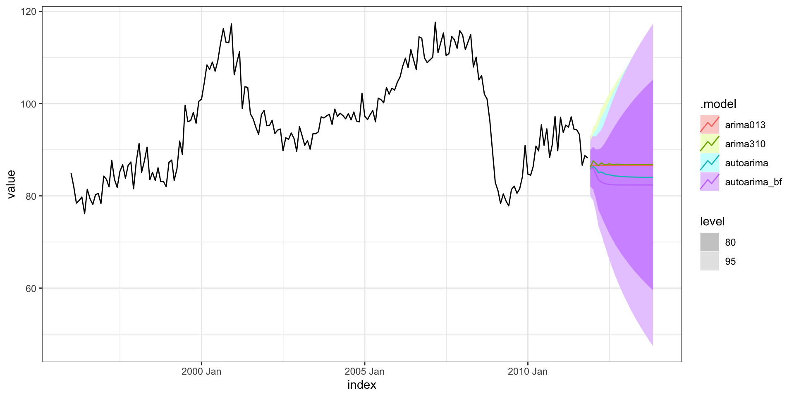Cross validation
Test train split
The general approach is to keep the data ordered and split the first prop% into the training data and the remainder as testing data.

# A tsibble: 20 x 2 [1M]
index value
<mth> <dbl>
1 2010 Apr 90.8
2 2010 May 89.7
3 2010 Jun 95.4
4 2010 Jul 91.0
5 2010 Aug 94.5
6 2010 Sep 88.3
7 2010 Oct 91.1
8 2010 Nov 97.2
9 2010 Dec 89.8
10 2011 Jan 97.0
11 2011 Feb 93.7
12 2011 Mar 95.4
13 2011 Apr 94.9
14 2011 May 97.1
15 2011 Jun 94.5
16 2011 Jul 94.3
17 2011 Aug 93.3
18 2011 Sep 86.6
19 2011 Oct 88.7
20 2011 Nov 88.2Model fit (training)
( mm = rsample::training(elec_sales_split) %>%
model(
arima310 = ARIMA(value ~ pdq(3,1,0)),
arima013 = ARIMA(value ~ pdq(0,1,3)),
autoarima = ARIMA(value),
autoarima_bf = ARIMA(value, stepwise = FALSE)
)
)# A mable: 1 x 4
arima310 arima013 autoarima autoarima_bf
<model> <model> <model> <model>
1 <ARIMA(3,1,0)> <ARIMA(0,1,3)> <ARIMA(3,1,0)> <ARIMA(3,1,0)>Forecasting
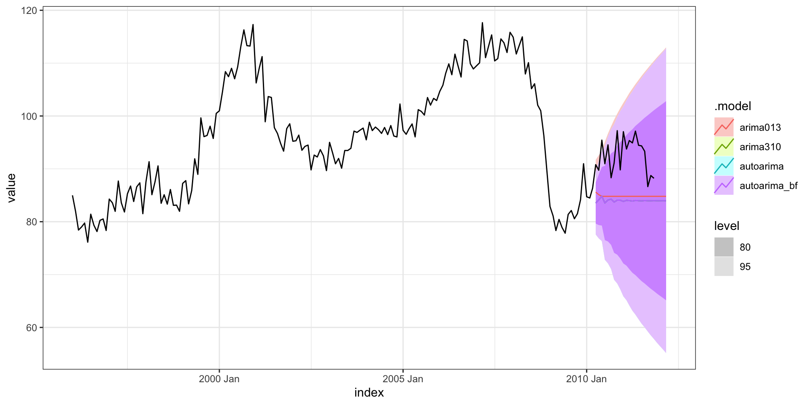Accuracy
Out-of-sample:
# A tibble: 4 × 10
.model .type ME RMSE MAE MPE MAPE MASE RMSSE ACF1
<chr> <chr> <dbl> <dbl> <dbl> <dbl> <dbl> <dbl> <dbl> <dbl>
1 arima013 Test 7.73 8.39 7.73 8.24 8.24 0.935 0.742 0.148
2 arima310 Test 8.60 9.17 8.60 9.18 9.18 1.04 0.811 0.162
3 autoarima Test 8.60 9.17 8.60 9.18 9.18 1.04 0.811 0.162
4 autoarima_bf Test 8.60 9.17 8.60 9.18 9.18 1.04 0.811 0.162Within-sample:
# A tibble: 4 × 10
.model .type ME RMSE MAE MPE MAPE MASE RMSSE ACF1
<chr> <chr> <dbl> <dbl> <dbl> <dbl> <dbl> <dbl> <dbl> <dbl>
1 arima310 Training -0.00435 3.00 2.31 -0.0535 2.42 0.279 0.265 -0.0317
2 arima013 Training -0.000151 3.08 2.32 -0.0541 2.44 0.281 0.272 -0.0318
3 autoarima Training -0.00435 3.00 2.31 -0.0535 2.42 0.279 0.265 -0.0317
4 autoarima_bf Training -0.00435 3.00 2.31 -0.0535 2.42 0.279 0.265 -0.0317Rolling forecasting origin
One-step ahead predictive performance
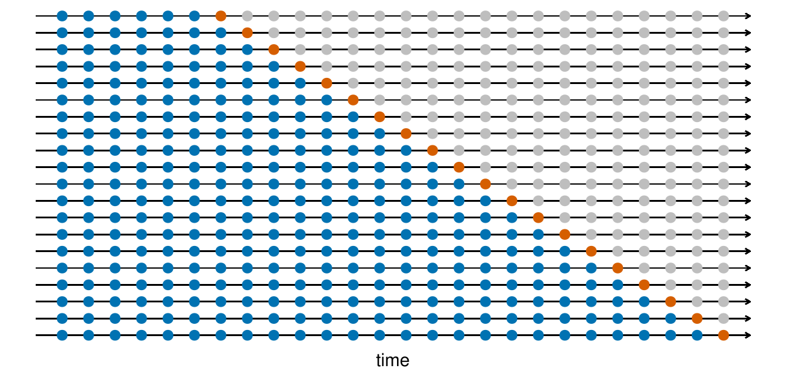
Four-step ahead predictive performance
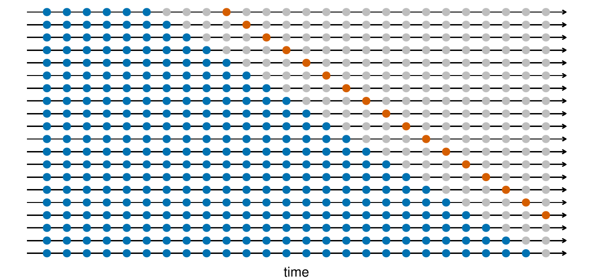
Prophet
Prophet model
Prophet uses a modeling framework that looks a lot like traditional GAM approaches. Specifically the time series is modeled as
\[ y(t) = g(t) + s(t) + h(t) + \epsilon_t \]
where
\(g(t)\) is a piecewise linear trend component
\(s(t)\) is a seasonal component based on Fourier terms with specified period(s) and order
\(h(t)\) are holiday effects (specific dummy coded variables for important dates / times)
\(\epsilon_t\) white noise error
Implementation
Prophet is implemented in its own R package and Python packages (prophet) which provide all of the basic functionality.
The model fitting is done using a Bayesain approach with the specific implementation using Stan.
Other frameworks like fable (or modeltime) provide higher level interfaces to this package.
prodn from astsa
Monthly Federal Reserve Board Production Index (1948-1978)
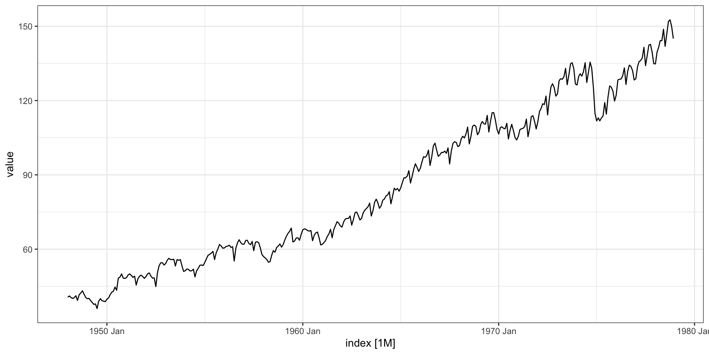Test train split
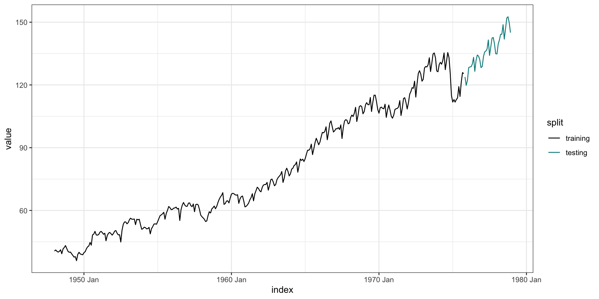Models
library(fable.prophet)
( prodn_fit = rsample::training(prodn_split) %>%
model(
arima = ARIMA(value ~ pdq(1,1,0) + PDQ(0,1,3)),
autoarima = ARIMA(value),
prophet = prophet(value ~ season(period = 12,
type = "multiplicative"))
)
)# A mable: 1 x 3
arima autoarima prophet
<model> <model> <model>
1 <ARIMA(1,1,0)(0,1,3)[12]> <ARIMA(2,0,1)(0,1,1)[12] w/ drift> <prophet>Forecast
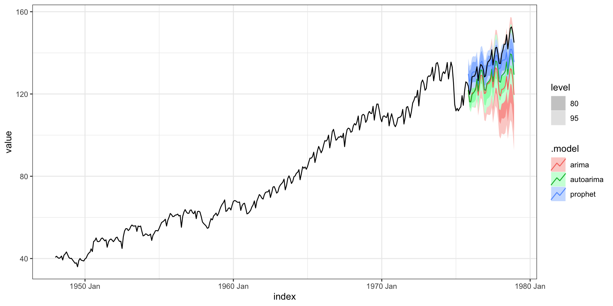Forecast - zoom
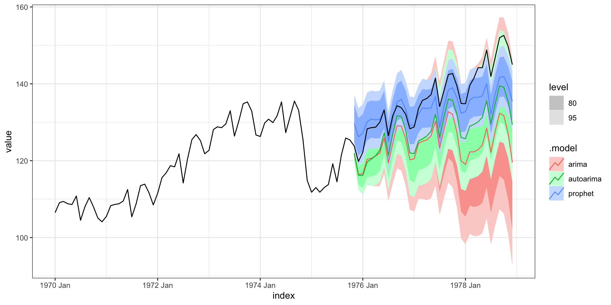Accuracy
Out-of-sample:
# A tibble: 3 × 10
.model .type ME RMSE MAE MPE MAPE MASE RMSSE ACF1
<chr> <chr> <dbl> <dbl> <dbl> <dbl> <dbl> <dbl> <dbl> <dbl>
1 arima Test 7.93 8.29 7.93 5.95 5.95 1.56 1.34 0.755
2 autoarima Test 6.52 6.93 6.52 4.91 4.91 1.28 1.12 0.759
3 prophet Test 0.145 3.22 2.65 0.0162 2.01 0.522 0.521 0.833Within-sample:
# A tibble: 3 × 10
.model .type ME RMSE MAE MPE MAPE MASE RMSSE ACF1
<chr> <chr> <dbl> <dbl> <dbl> <dbl> <dbl> <dbl> <dbl> <dbl>
1 arima Training -0.00242 1.14 0.821 0.0129 1.11 0.162 0.185 -0.0348
2 autoarima Training 0.000504 1.17 0.831 -0.0402 1.11 0.164 0.189 0.00432
3 prophet Training 0.000883 3.83 2.87 -0.234 3.70 0.565 0.620 0.950 Components
Complex seasonality
Half-hourly electricity demand - vic_elec
# A tsibble: 52,608 x 5 [30m] <Australia/Melbourne>
Time Demand Temperature Date Holiday
<dttm> <dbl> <dbl> <date> <lgl>
1 2012-01-01 00:00:00 4383. 21.4 2012-01-01 TRUE
2 2012-01-01 00:30:00 4263. 21.0 2012-01-01 TRUE
3 2012-01-01 01:00:00 4049. 20.7 2012-01-01 TRUE
4 2012-01-01 01:30:00 3878. 20.6 2012-01-01 TRUE
5 2012-01-01 02:00:00 4036. 20.4 2012-01-01 TRUE
6 2012-01-01 02:30:00 3866. 20.2 2012-01-01 TRUE
7 2012-01-01 03:00:00 3694. 20.1 2012-01-01 TRUE
8 2012-01-01 03:30:00 3562. 19.6 2012-01-01 TRUE
9 2012-01-01 04:00:00 3433. 19.1 2012-01-01 TRUE
10 2012-01-01 04:30:00 3359. 19.0 2012-01-01 TRUE
# … with 52,598 more rowsFull data
Data - December 2014
Seasonality - Yearly

Seasonality - Weekly
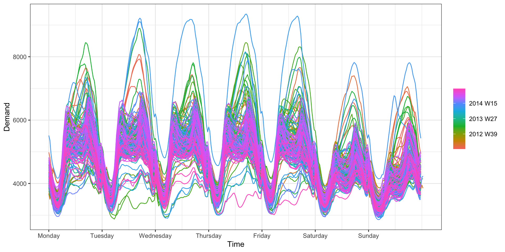Seasonality - Daily
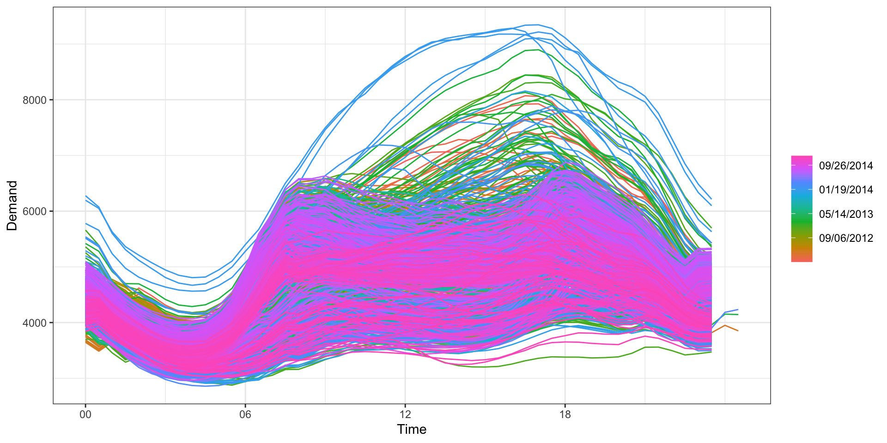Model
Components
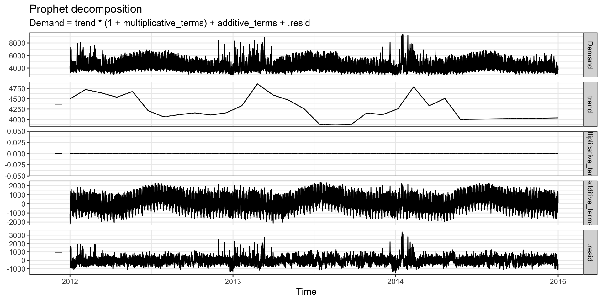Residuals
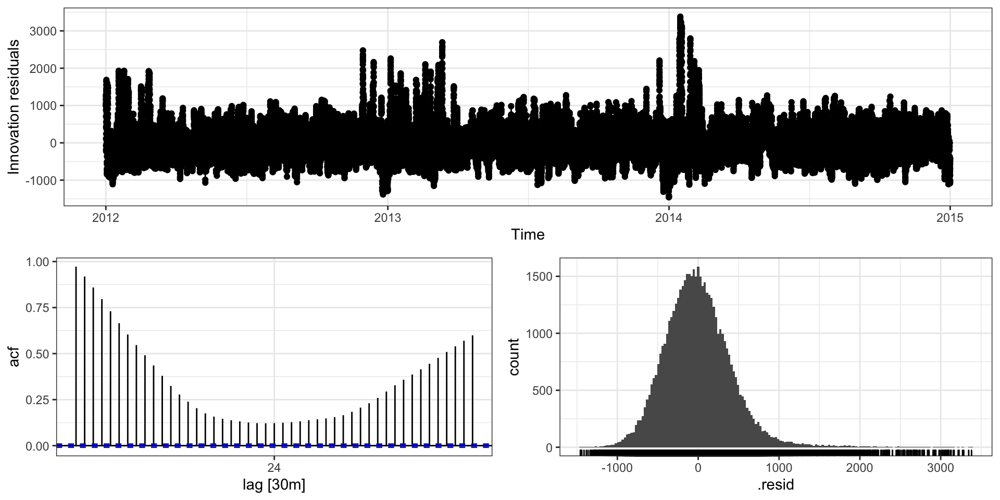Sta 344 - Fall 2022